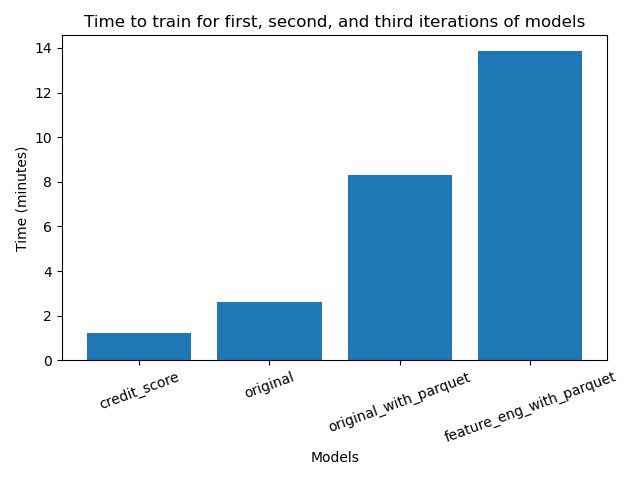

Summary of Results
As originally hypothesized, increasing the amount of training data led to better performance. However, it also cost more: the time (resources) increased exponentially.
We hope to use our findings to open interesting conversations with policy analysts and bank representatives about which mortage risk models are feasible to rely on.
Models at First Glance: Visualizing Predictive Performance
Firstly, let's evaluate how each model iteration performed in terms of ROC AUC and precision.
As a reminder:
- AUC is a measure of overall performance (both correctly predicting default AND not default).
- Precision is a measure of how many true positives (correctly predicting default) there are out of the total (correctly OR incorrectly predicted default).
By measuring both of these metrics, we can get a nuanced understanding of how well the model performs overall and in relation to false positives.


Main Idea: As the amount of data (instances OR features) increases, performance improves. Specifically, AUC increases linearly while precision increases exponentially.
Here are some highlights:
- AUC (overall performance) increases roughly linearly when adding more features (see
originalin yellow compared tocredit score, as well asfeature_eng_with_parquetas compared tooriginal with parquet) - There is about a 15% increase from our baseline (
credit score) model compared to our FE model (feature_eng_with_parquet). - Precision goes up exponentially as more features and data are added to the model (almost 30% jump from baseline to last model)
- There is a 18% jump in precision when we add feature engineering into the mix
Models at Second Glance: Cost using Time as a Proxy
To get a nuanced understanding of the model performance, we also measured the time to run the model.
Time represents the time taken to initialize, train, and evaulate each model. Time is measured in minutes on the graph.
We can see time to run the model as representative (or a proxy) of the cost in resources, computing, and money to process a model.

Main Idea: Time (cost) goes up exponentially as we feed the model more data to train/learn from.
Here are some other highlights:
- We can see that loading data from parquet also increases time. Our theory is that this is the loading/storing time. If we used even more data, the cost of loading using parquet would be "worth it".
- Feature engineering took almost 2x more cost than
original_with_parquet. However, this corresponds to almost 2x more precision.